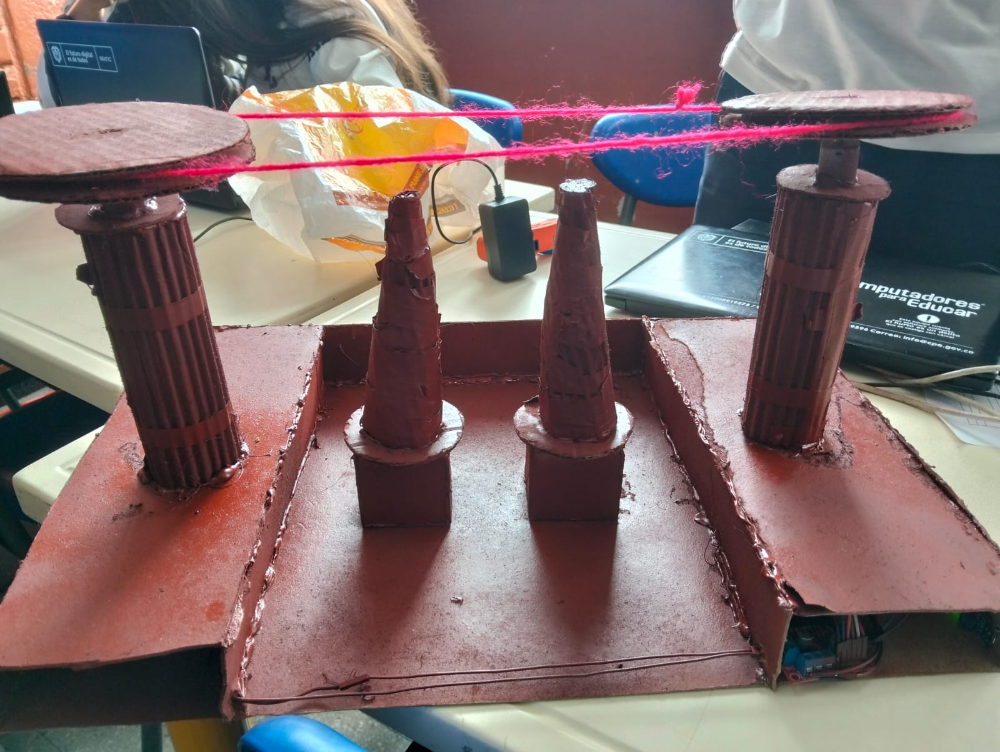

Ingeniería y Creatividad en Movimiento
Este proyecto nace como un desafío: demostrar la aplicación práctica de la tecnología y la programación en un modelo funcional y elegante. Se trata de un teleférico automatizado, diseñado desde cero como un proyecto culminante que fusiona la ingeniería mecánica con la inteligencia del software.
La estructura, cuidadosamente elaborada con cartón y madera de balso, demuestra cómo materiales accesibles pueden transformarse en una pieza de ingeniería precisa. En su interior, el sistema cobra vida gracias a un cerebro Arduino UNO. Este microcontrolador ejecuta un código afinado para dirigir un Puente H L298N, que a su vez gestiona la potencia y dirección de los dos motores, asegurando un movimiento fluido y estable.
El mayor reto del proyecto fue la programación del código Arduino: sincronizar el hardware y perfeccionar la lógica para que cada acción fuera impecable. La solución se logró a través de un sensor seguidor de línea infrarrojo, que actúa como los ojos del sistema, permitiéndole detenerse de forma autónoma y con una precisión milimétrica en sus estaciones.
El resultado es una maqueta excelente y completamente funcional que no solo se mueve, sino que ejecuta su tarea de forma inteligente y autónoma, reflejando una profunda comprensión de la tecnología y un alto nivel de ejecución.